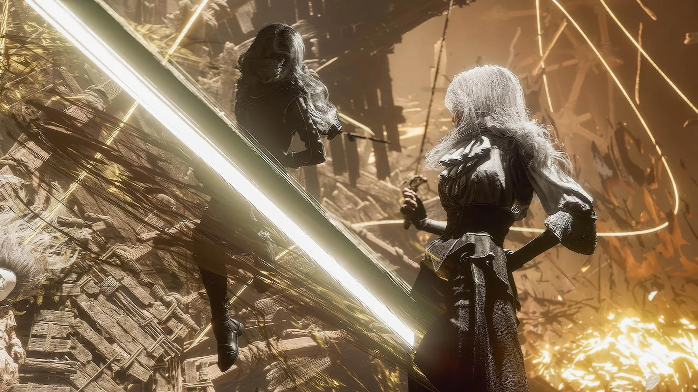

Combat
当回合制遇见实时反应
《33号远征队》的战斗系统建立在一个迷人的矛盾之上：它是回合制的，又是实时的。你有足够的时间思考每一步棋，但在执行的那一刻，手速与反应同样重要。
在敌方回合，你可以选择闪避或格挡。闪避要求你在攻击落下的那一刻移开；格挡则要求更精准的时机——在恰当的瞬间按下，才能把伤害化为最小。这不是噱头，它让战斗始终保持紧张感，让玩家真实地"参与"到每一次冲击之中，而不只是旁观数字计算。
在己方回合，攻击同样有实时要素：某些技能需要节奏输入，某些需要快速反应，执行得越精准，效果越强。这让战斗有了一种音乐性，一种在战术决策和身体反应之间的交织。

战斗的视觉风格延续了整个游戏的"光影绘画"美学，每一场战斗都像是一幅流动的油画。
System
四个支撑战斗的系统
回合制战略层
每个角色有独立的技能树与行动顺序。你需要考虑连击、属性克制、状态效果与资源管理。战斗深度在后期会显著增加，但入门门槛保持友好。
实时闪避与格挡
敌方攻击有视觉预兆，玩家在正确时机按键可以大幅减免或完全规避伤害。精准格挡还可以触发特殊的反击机制，为下一回合积累优势。
Pictos 图像系统
Pictos 是可装备的符文卡，来自游戏世界中被击败的怪物或发现的遗迹。每个 Picto 解锁一种技能或被动效果，积累足够数量可以永久学习。
Lumina 光素网格
每个角色拥有独特的 Lumina 网格，用于安装强化节点。网格的布局因人而异，鼓励深度定制，而非千人一面的养成路线。
Pictos & Lumina
光素与图像：成长的语言
如果说战斗系统是游戏的骨骼，那 Pictos 与 Lumina 就是它的血肉。这套养成系统并不以"变强"为目标，而是以"变得更像你自己"为逻辑。
Pictos 是从战斗中收集的图像符文。每一个 Picto 都有独特的画面——它们来自这片被画出的世界，带着一种奇异的美感。你为角色装备 Pictos，不只是为了数值，也是为了那个角色的"风格"。当你积累足够的同类 Pictos，那种风格会被永久地吸收进那个角色的身份之中。
Lumina 网格更接近一个空间谜题。每个角色的网格是不对称的，你需要用有限的节点填充出最优的路径——攻击、防御、支援、特殊效果相互交织，没有标准答案，只有你的选择。
Pictos 类型示例
Exploration
探索：在画中行走
战斗之外，《33号远征队》是一款需要缓慢品味的游戏。Continent 的地图是半开放的，充满了隐藏路径、废弃遗址和意想不到的风景。游戏不催促你，它希望你在某个转角停下来，看一看那个光线奇异的山谷，听一听那首若有似无的音乐。
每个区域都有自己的视觉语言：有的地方像是文艺复兴时期的油画，有的像是印象派的光影试验，有的则像是水彩渗透纸面时那种边界模糊的状态。你走过的，是一座活着的画廊，而你是画廊里唯一会流血的东西。
许多支线内容并不以"奖励"为驱动，而是以"理解"为目的。你找到一段日记，了解了一个普通人如何在绘母的消亡规则下度过一生；你触碰一块石碑，看到了某支远征队失败前最后留下的文字。这些，比任何装备都更重要。

Continent 的视觉设计由油画笔触构成，光线像是穿透画布而来，自带一种绝美的忧伤。